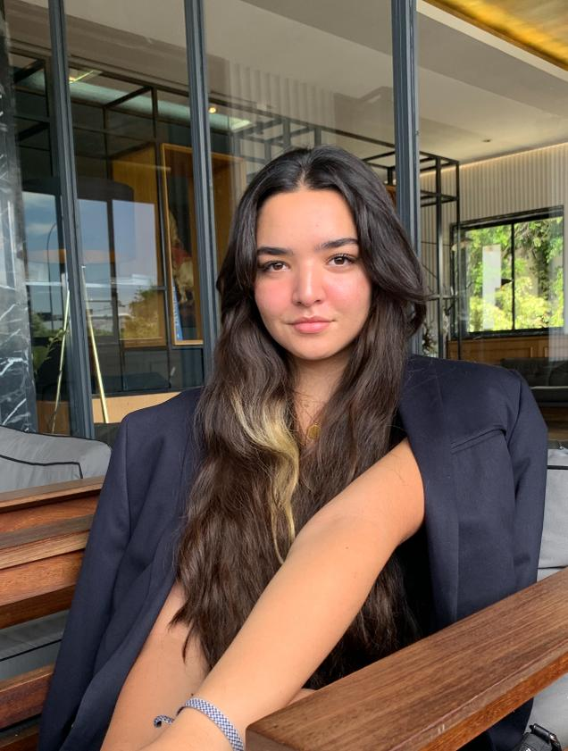
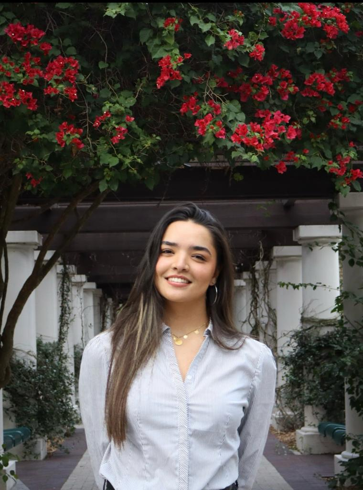

My name is Rima El Brouzi and I am currently a senior majoring in Computer Science at the University of South Florida
I was born and raised in the vibrant city of Casablanca, Morocco. While I initially aspired to carve a career path in business, marketing, and management; my academic journey led me to the exciting world of computer science and I found my true passion in the field. As a result, I now embrace the intersection of technology and business. A fascinating aspect of my identity is my proficiency as a polyglot, with fluency in seven languages and a strong desire to expand my linguistic repertoire. Beyond the realm of coding and languages, I am a multifaceted individual with interests spanning sports, cooking, socializing, entrepreneurship, and music.
Between the ages of 7 and 16, I swam competitively back home, an experience that significantly shaped my character by instilling discipline, leadership, and organizational skills. Although I've transitioned away from competitive swimming, my love for sports persists both as a spectator and an enthusiast. For a detailed insight into my varied interests, please visit my Occupations page. Beyond the digital world, I find joy in the culinary arts, particularly in preparing Moroccan cuisine—a delightful means of sharing my cultural heritage with friends. More recently, I've immersed myself in reading, finding great fulfillment in educating myself about art, philosophy, and theoretical sciences, and engaging in enlightening conversations with fellow enthusiasts.
